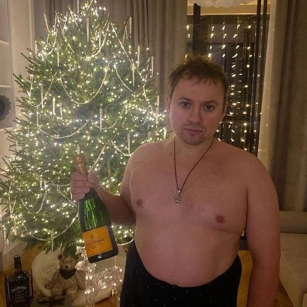
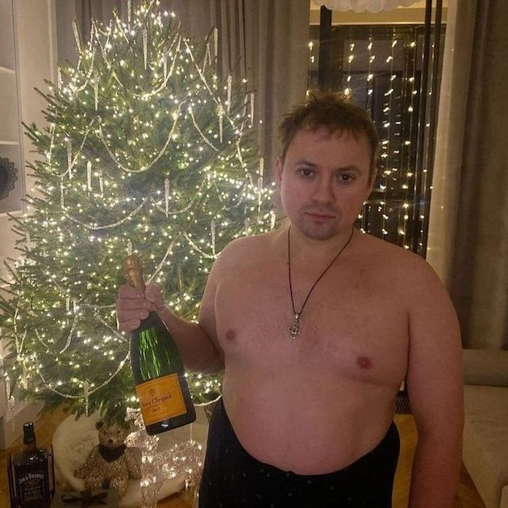

НОВОСТИ ПРО АНДРЕЯ
Андрей Голем, двадцать лет отроду, только что зарядил в себя пачку пельменей, щедро залитых ядрёной аджикой. Теперь он сидит в обнимку с белым другом, а из него выходят не какашки, а снаряды калибра «oh-shit». Они с грохотом падают в воду, а сам он, бледный, как простыня, не может даже в телефоне в танки играть — трясущиеся руки мажут мимо цели. В голове одна мысль: «Надо было жрать эти ебучие котлеты, которые мама оставила». Но нет, решил быть оригинальным. Теперь его единственная шабашка на вечер — отстоять свой пост у унитаза и выжить. Цена контракта — его достоинство и спокойствие жопы. Шабашка, блять, невыполнимая.
НОВОСТИ ПРО ВЛАДОСА
Владос — это не имя, это титул. Титул Повелителя Унитаза и Непревзойденного Гамзателя в «Танки». Его царство простирается от заваленного пустыми банками пива системного блока до белого фаянсового трона, на котором он проводит значительную часть своей сознательной жизни. Он — проф в «Дотке», но не простой, а специфический. Его специализация — стиль «steal a brainrot», особая тактика игры, от которой скилл противников не растет, а необратимо деградирует. Он мастер хейта в чате и виртуоз непредсказуемых действий, сводящих с ума и своих, и чужих. Его состояние души — это вечный «funpay магнат». Он вечно что-то продает, покупает, меняет и обводит вокруг пальца кого-то на трейдерских площадках, считая это высшей формой предпринимательства. Он не просто пьет пиво. Он — его пивной житель. Пенный напиток — это кровь, текущая по венам его цифровой империи, топливо для ночных марафонов в доте и гамза в танках. Его кредо просто: есть вай-фай, есть пиво в холодильнике и запасной рулон туалетной бумаги неподалеку. Остальное — приложится.
НОВОСТИ ПРО ТЕМУ
Тема — это тот самый лучик света в суровом цифровом хаосе. В то время как все вокруг гамзят, хейтят и спорят о мете, он занимается самым важным — несёт добро и позитив. Его главная фишка — делать селфи через встроенный фоторедактор Steam. Но это не просто скриншоты. Это целое искусство: он ловит самые эпичные моменты матчей — взрыв за спиной, победоносный момент на троне, комичную смерть тиммейта — и превращает их в шедевры. Обязательно с подписью, которая заставит улыбнуться даже после самого жёсткого поражения. Все его знают в лицо — ну, в лицо его пиксельного аватара с широкой улыбкой и в колпаке неудачника из какой-нибудь инди-игры. Он — живой мем, локальная знаменитость, human-фактор в мире цифрового безразличия. Он не просто играет — он создаёт настроение. После игры с ним хочется зафрендить его не ради скилов, а просто чтобы видеть в ленте его дурацкие и тёплые скриншоты. А ещё Тема — главный поставщик мемов и гифок в общем чате. Он тот, кто после жаркого спора о балансе героев закинет в беседу смешную картинку, и всё напряжение мгновенно испаряется. Он напоминает всем, что игры — это в первую очередь про кайф и хорошие эмоции. И за это его любят даже самые угрюмые и заядлые гамзеры.
НОВОСТИ ПРО УКРОПА
Воробжа — небольшой, но гордый посёлок, у которого есть свой неформальный лидер. И зовут его Укроп. Он не просто житель, он — Приездиент. Человек-легенда, чей авторитет зиждется на трёх китах: любви к Макдональдсу, недюжинной силе и банным посиделкам. Этот тестостероновый Геркулес в косухе может одним взглядом остановить разбушевавшегося быка, а его любимое хобби — руинить на «Сларке», оставляя за собой след из виртуальных обломков и поверженных врагов. Говорят, именно он научил местных барменов наливать «как для своего». Но его истинная обитель — не дом и не забегаловка, а старая курская баня. Он её единственный и постоянный житель, хранитель её пара и духа. Для всех он — Укроп. Приездиент Воробжей, царь «Сларка» и патриарх парилки.
НОВОСТИ ПРО МИШУ
Миша — это не просто рядовой обитатель цифровых фронтов. Он — гуру «Дотки» и «Танков», чьи рейды в виртуальные миры больше похожи на священные крестовые походы. Он не играет — он ведёт тотальную войну, врываясь в топ-95% не столько расчётом, сколько неукротимой яростью, выжигающей всё на своём пути. Его фирменный прелюдия к победным репортажам — ритуальное раскуривание отборной шишечки, чтобы поймать тот самый «вкус мощности» и отсечь всё лишнее грохотом в наушниках. Но его натура сложнее простого тролля. Миша — тонкий ценитель настоящей сваги. Он коллекционирует не только скины, но и атмосферу, статус, тот неуловимый лоск digital-бытия. Он тот, кто часами может раскапывать Фенрира — искать по форумам, стримам и патчам ту самую сломанную механику, ту скрытую опцию, что превратит его из просто геймера в повелителя меты. А ещё он знает цену настоящему отдыху. Когда клавиши на клавиатуре уже плавятся, а глаза устали от экрана, Миша мастерски оттягивает шкурку где-нибудь в киевской кофейне, потому что даже бунтарю нужна своя резиденция для перезарядки. Система вручает ему «Эгиду» почти на халяву — она в недоумении, как подступиться к этому хаотичному алхимику, который одинаково виртуозно и ломает вражескую оборону, и разгадывает тайны игровых вселенных. Он — редкий гибрид: и гроза катков, и их тайный архивариус. И он не собирается сбавлять ход.
 
